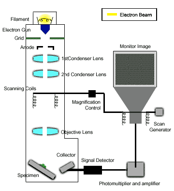
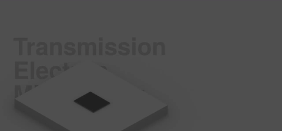
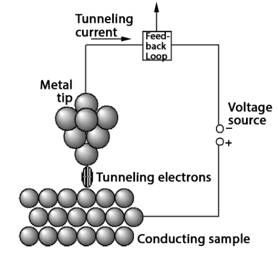
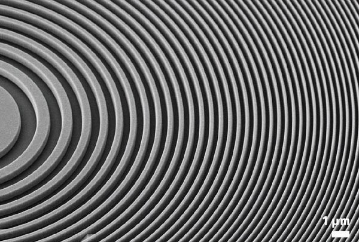

Instruments in Nanotechnology
Tools used to visualize, manipulate, and fabricate at the nanoscale.

SEM — Scanning Electron Microscope
Uses focused electron beam to scan surface topography with nanometer resolution.
What it does:
Creates high-res 3D-like images of surfaces. Ideal for nanoparticles, coatings, biological samples.
Typical Use:
Imaging carbon nanotube forests, fracture surfaces, bacterial biofilms.

TEM — Transmission Electron Microscope
Transmits electrons through ultra-thin samples to reveal internal atomic structure.
What it does:
Reveals crystal lattice, defects, nanoparticle cores — down to atomic scale.
Typical Use:
Studying quantum dots, catalyst nanoparticles, virus structures.

AFM — Atomic Force Microscope
Measures surface forces using a nanoscale tip — works in air, liquid, vacuum.
What it does:
Maps topography, adhesion, stiffness, magnetic/electrical properties at atomic resolution.
Typical Use:
DNA/protein imaging, polymer blends, graphene layer counting, live cell mechanics.

STM — Scanning Tunneling Microscope
Uses quantum tunneling current to map electronic density of states at atomic scale.
What it does:
Visualizes individual atoms and electron clouds. Requires conductive samples.
Typical Use:
Imaging silicon reconstructions, molecular orbitals, quantum corrals.

FIB / Lithography Tools
Uses ion beams to mill, deposit, or pattern nanostructures with precision.
What it does:
Nano-fabrication, TEM sample prep, circuit edit, maskless lithography.
Typical Use:
Creating nanopores, modifying chips, prototyping nanodevices.
Characterisation Techniques
Methods to analyze composition, structure, size, and optical/mechanical properties.

XRD — X-Ray Diffraction
Measures crystal structure, phase identification, and lattice parameters.
Tutorial:
Shine X-rays on crystalline sample → measure diffraction angles → calculate d-spacings → match to database.
Example:
Confirming formation of anatase vs. rutile TiO₂ nanoparticles after synthesis.

DLS — Dynamic Light Scattering
Measures nanoparticle size distribution in solution via Brownian motion.
Tutorial:
Laser light scatters off particles → fluctuations in intensity correlate to diffusion speed → calculate hydrodynamic diameter.
Example:
Checking aggregation state of drug-loaded liposomes in buffer.

UV-Vis Spectroscopy
Measures optical absorption to determine bandgap, concentration, plasmon peaks.
Tutorial:
Shine UV-Vis light → measure absorbance vs. wavelength → identify peaks (e.g., Au NP plasmon at ~520 nm).
Example:
Tracking growth of silver nanoparticles by peak shift from 400 → 450 nm.

Raman Spectroscopy
Probes molecular vibrations to identify chemical bonds and crystal symmetry.
Tutorial:
Shine laser → collect inelastically scattered photons → plot intensity vs. Raman shift (cm⁻¹) → match fingerprint peaks.
Example:
Distinguishing single-layer vs. multi-layer graphene by 2D/G peak ratio.

FTIR — Fourier Transform Infrared Spectroscopy
Identifies functional groups and chemical bonds via infrared absorption.
Tutorial:
IR light passes through sample → detector measures absorption → Fourier transform converts to spectrum → match peaks to bond types.
Example:
Confirming PEG coating on iron oxide nanoparticles by C-H and C-O stretch peaks.